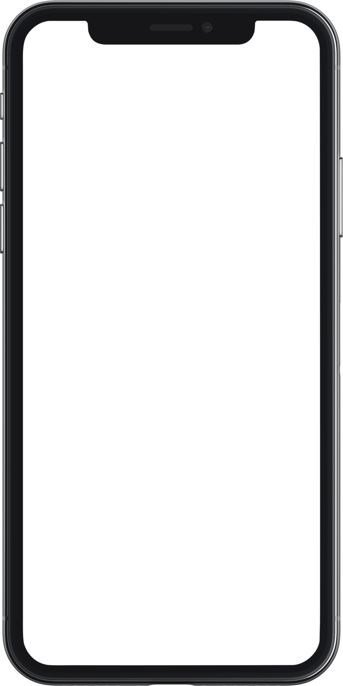
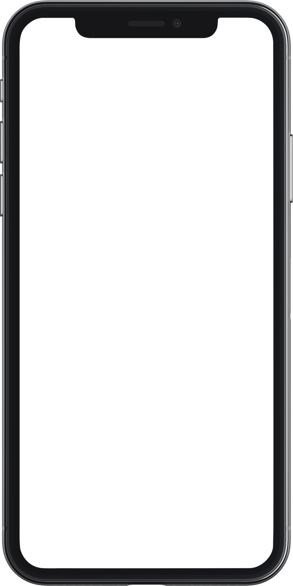

A high-quality solution startup
website quickly

With Startup, we don’t make you start from an empty slate. All you have to do is to pick the elements you like best and combine them together and we guarantee that it will look fantastic.
Startup Framework works fine on devices supporting Retina Desplay. Feel the clarity!
Of course we haven’t forgotten about the responsive layout. Full mobile support.
 

The Generator App is an online tool that helps you to export ready-made templates ready to work as your future website. It helps you to combine slides, panels and other components and export it as a set of static files: HTML/CSS/JS.
The most important part of the Startup Framework is the samples. The samples form a set of 25 usable pages you can use as is or you can add new blocks from UI Kit. By choosing one of the 25 configurations of the future startup, the process of creation is simple and easy.

Startup Design Framework contains components which can easily be inte-grated into almost any design.
You can decide whether to create your site using UI Kit blocks or samples. The blocks can merge together in various combinations.